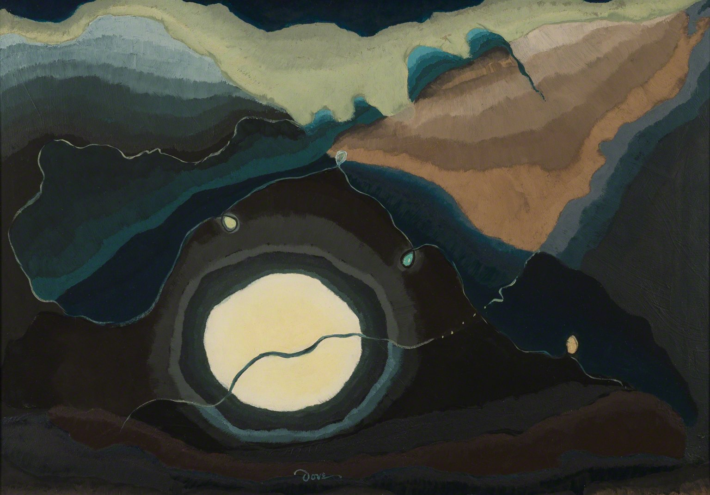

The moon does not erase the dark. It gives it a pulse.
An off-center moon gathers the eye. An ochre wedge pushes diagonally inward.
Analogous blue-greens hold the night. Pale yellow glows through value contrast.
Nested bands suggest radiance; realistic cast shadows are unnecessary.
Suggested design colors; not exact artwork samples.
Broad bands retain brush marks. Fine lines cross the moon and meet small lights.
Dove used shape and color to express the less visible rhythms of nature.
The moon stays off-center. A little warmth can hold the weight of night.
Deep teal ground. Gray-green bridge. One pale focus.
Move the circle off-center; add ochre to one side.
Wide bands set rhythm. A thin line connects. Check small.
Suggested design colors; not exact artwork samples.
Arthur G. Dove · 1937 The Phillips Collection · 0559
Rights remain with the artist and relevant rights holders. No open image license stated; qualifying noncommercial education/commentary only under museum terms. Independent analysis.